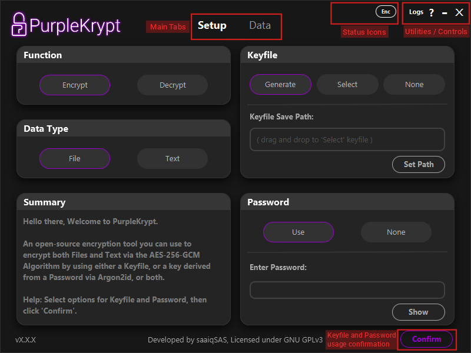
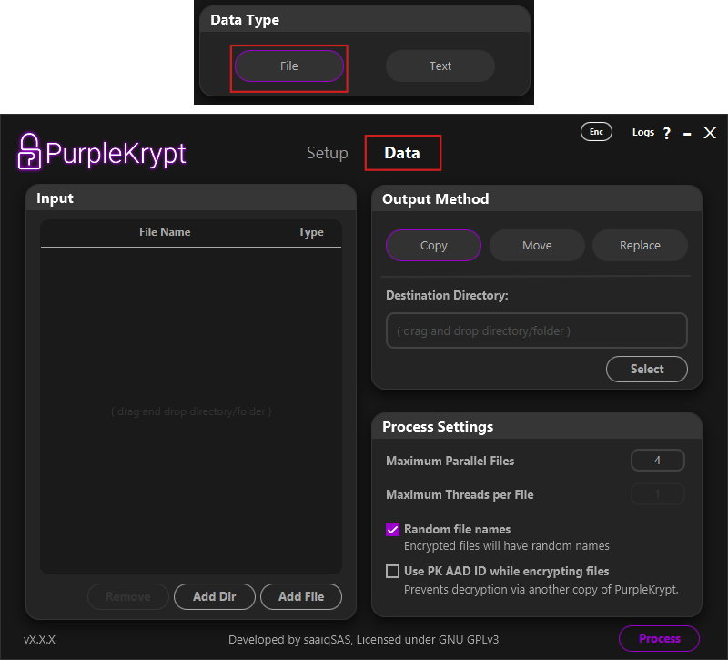
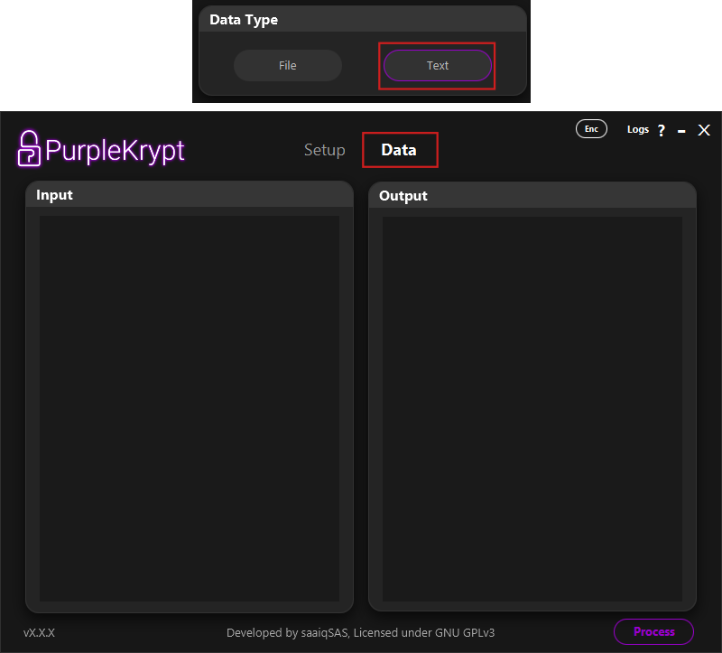
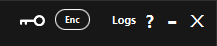

1. User Interface
by: saaiqSAS
Last Updated: 9/2/2026
In this section, we will explore the core layout of PurpleKrypt, highlighting its key features and providing a step-by-step overview to help you
navigate its main sections. Below, in Fig.1.1, you can see the overall layout of the tool.

Fig.1.1
Keyfile and Password
Fig.1.1 shows the layout of the Setup tab. The right half of the interface, where the Keyfile and Password boxes
are located, is responsible for key usage configuration.
PurpleKrypt supports three different key configurations:
1. Keyfile encrypted with password – Keyfile: Generate, Password: Use
2. Unencrypted keyfile – Keyfile: Generate, Password: None
3. Password only – Keyfile: None, Password: Use
The Select option (or drag and drop a keyfile) should be used if you want to work with an existing keyfile.
This keyfile may be encrypted or unencrypted, depending on whether a password was used during its creation. Note that the application
has no method of identifying whether a keyfile is encrypted; therefore, it is your responsibility to remember.
Keyfiles selected using the Select option are not limited to decryption and can also be used to encrypt additional data.
A selected encrypted keyfile can also be used without providing the password. In this case, the key loaded into memory will differ from the key
generated when the correct password is supplied. As a result, data encrypted with a password requires the password to decrypt correctly,
while data encrypted without a password must be decrypted without one. This behavior does not apply to unencrypted keyfiles.
In other words, a password cannot be used with an unencrypted keyfile.
(This behavior was originally a bug and is now treated as a "feature". If it is later determined to be a security risk, this "feature" will be removed.)
Once you have selected your desired options and provided any required input in the Setup tab, click the
Confirm button. This confirms your keyfile and password selections and stores the configuration in memory
(not the key itself). If you later modify any options or inputs in the Keyfile or Password
boxes, you must click the Confirm button again for the changes to take effect. The Function and
Data Type options, however, update immediately when selected and are not tied to the Confirm button.
After clicking the Confirm button, you will automatically be taken to the Data tab.
Data Tab
The Data tab is where you manage inputs and outputs, whether they are files or text. The layout of this tab
changes based on the Input Type option (File or Text) selected in the Setup tab.

Fig.1.4
In Fig.1.4, you can see the layout of the Data tab when File is selected. On the left side,
under the Input section, is a table displaying the files and directories selected for processing.
You can add files or directories using the provided buttons or by dragging and dropping them into the table.
To remove an item, select it from the table and click Remove.
On the right side, you will find two sections: Output Method and Process Settings.
Under Output Method, you can choose one of the following options:
1. Copy keeps the input files untouched while saving the processed (encrypted or decrypted) files to the specified destination directory.
2. Move saves the processed files to the destination directory and then securely deletes the input files if no errors occur during processing. The secure delete method used by PurpleKrypt overwrites the file multiple times with different binary patterns before deletion.
3. Replace saves the processed files to their original locations and, if no errors occur, securely deletes the original input files.
Under Process Settings, you can configure the number of files to process in parallel, choose whether to assign random filenames to encrypted files,
and enable or disable PK AAD ID. The PK AAD ID is an array of numbers generated the first time PurpleKrypt is launched and stored in the
pk_aad_id file. When enabled, this data is included during encryption (used as AAD for AES-256) and prevents decryption using another copy
of PurpleKrypt with a different pk_aad_id file, even if the correct keyfile or password is provided.
Use this option with caution, and ensure you back up your PurpleKrypt copy or the pk_aad_id file. If this PK AAD ID is lost,
the encrypted data cannot be decrypted. (Be responsible.)

Fig.1.5
In Fig.1.5, you can see the layout of the Data tab when Text is selected. This layout is straightforward:
the left side, under Input, is where text input is provided, while the right side, under Output,
displays the processed text after clicking the Process button.
Status Icons, Utilities, and Controls
In Fig.1.6, you can see all icons and buttons located in the top bar.

Fig.1.6
'X' button: Closes the tool immediately, terminating all running processes without warning.
'-' button: Minimizes the tool window.
'?' button: Opens the Help page. If supported by your platform, this button launches your browser and navigates to the official PurpleKrypt documentation.
'Logs' button: Opens a new window displaying application logs.
'Enc' icon: Indicates the currently selected function in the Function section of the Setup tab.
'Key' icon: Appears when a key is currently stored in memory.